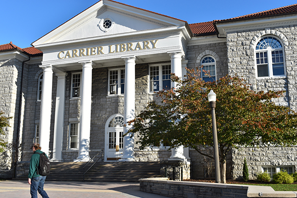

James Madison University was founded on February 29th, 1908. Having 21,000 students enrolled and over 720 acres of campus, JMU is ranked #3 in Best Undergraduate Teaching and #3 in Best Regional schools. The most popular of all the majors at JMU are the Health Related professions followed closely by Business, Communications and Design.

Being a large school, JMU has many clubs, sports and groups that allow the majority of the student body to get involved in the JMU life. James Madison University also offers many job opportunities to its current students and past alumni.